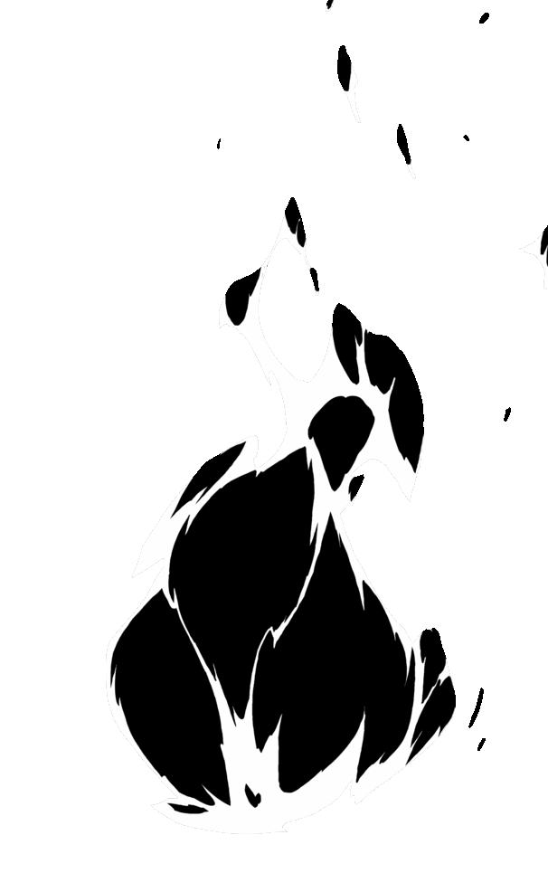
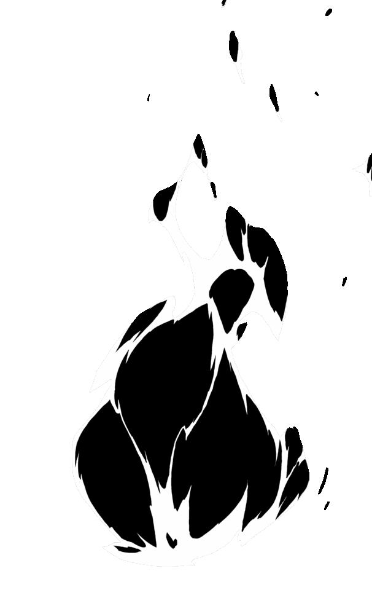

HEAVEN’S GATE OPENS FOR THOSE WHO LOOK FOR SHADOWS...


HIDDEN IN SPILLED BLOOD


THE WAY OF THE SHADOW


It is said that the path to Heaven's Gate is through the Way of the Shadows. Seven
mystical spells
hidden away from the world in the blood of destined warriors and the secret root of
conflict and war
for thousands of generations.
Attaining all Seven Shadows grants ascension to a chosen warrior with the promise of
immortality and
the ability to move through worlds. However, Shadows can only be gathered by spilling
the blood of
those holding the spell.


THE PATH TO ASCENSION
There is no greater prize than gathering a Shadow, no higher status, but it comes with
the price of notoriety and the inevitably of battle.
This is Kagedo, the pursuit of the Seven Shadows, a life taken on by only the highest of
warriors, the deadliest of assassins and the darkest of demons.

 



COPYRIGHT @ KAGEDO 2023 | Press + Enquiries zac@kagedo.io